自分のプロフィールを変えようとして、犬のプロフィールを開いた。
改善案・未実装見つかった問題
自分の編集場所が見つからず、犬のプロフィールを変更してしまう。
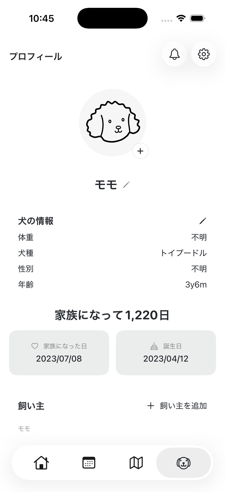
設計上の仮説
「プロフィール＝自分」という慣れた認識と、犬中心の構造がぶつかる。
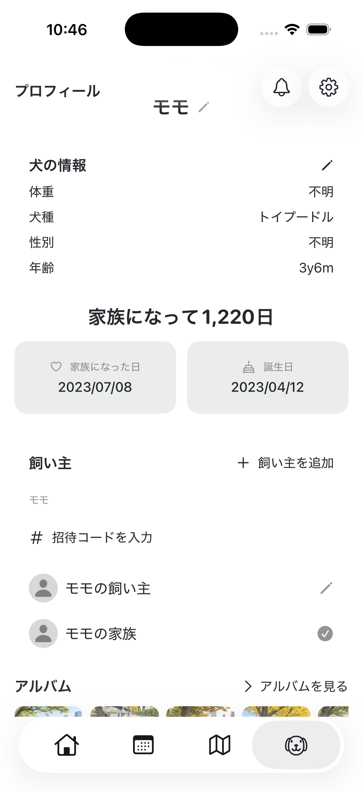
改善の方向
自分のプロフィールを、犬のプロフィールと並ぶ階層へ。
自分のプロフィール
犬のプロフィール
実装済み：保護者の名前・写真編集／改善予定：プロフィールへの導線
Personal project · iOS · UX / UI
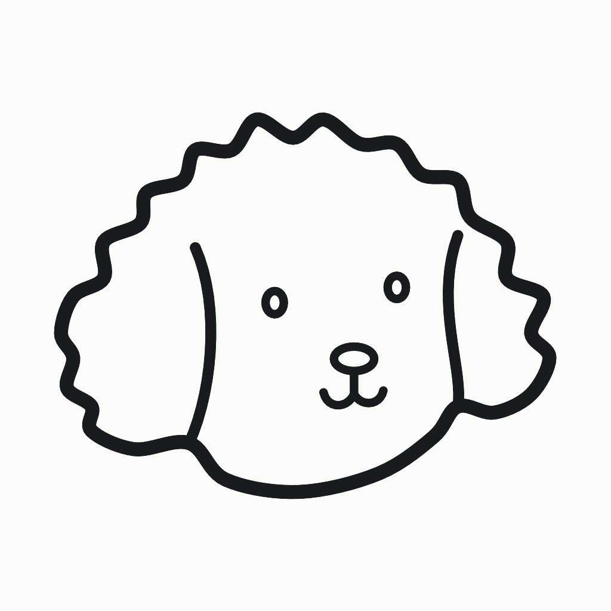
Mongram
散歩の記録を、家族があとからたどれるiOSアプリ。
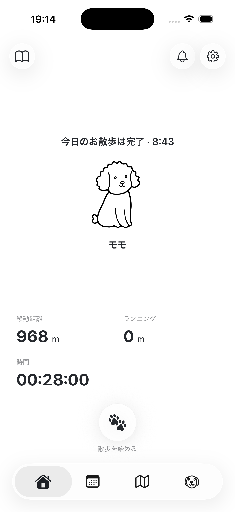
自分自身の経験から生まれました。忙しくて別々に散歩する私たち夫婦も、海外や遠方で離れて暮らす家族も、愛犬の一日を共有できるように考えました。


距離や時間だけでなく、ルートと写真を時系列で再生。家族がその日の散歩をたどれるようにしました。
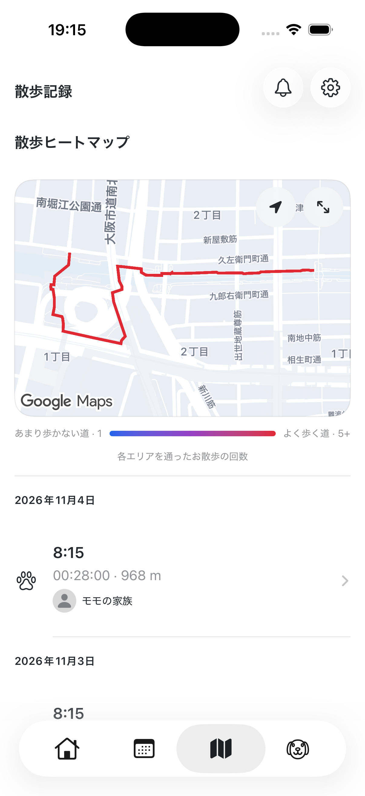
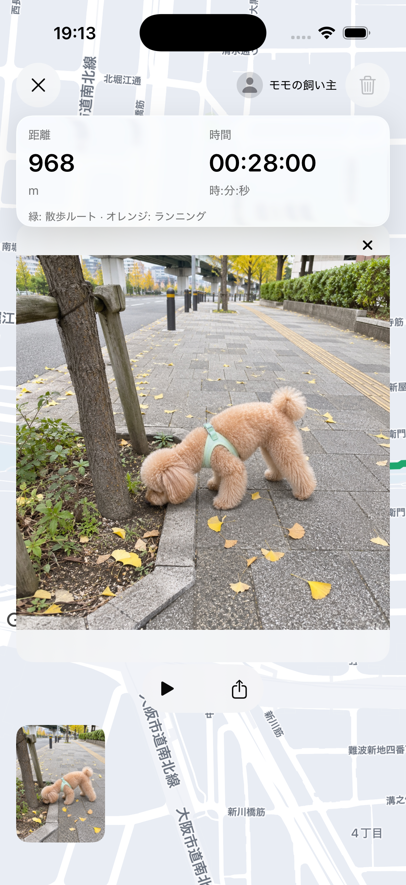
予定・フィラリア予防薬などを並べた初期案から、散歩の開始と記録を中心にしたホームへ。
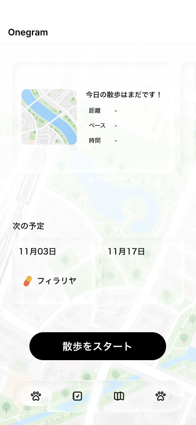

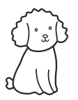
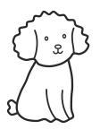
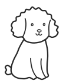
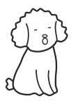
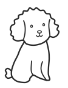
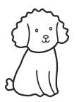
ロック画面とDynamic Islandで時間・距離を確認。タップで散歩画面へ戻れます。
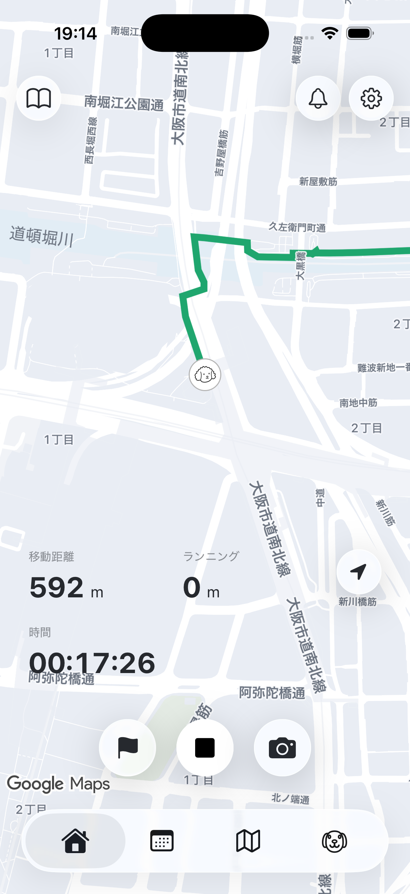
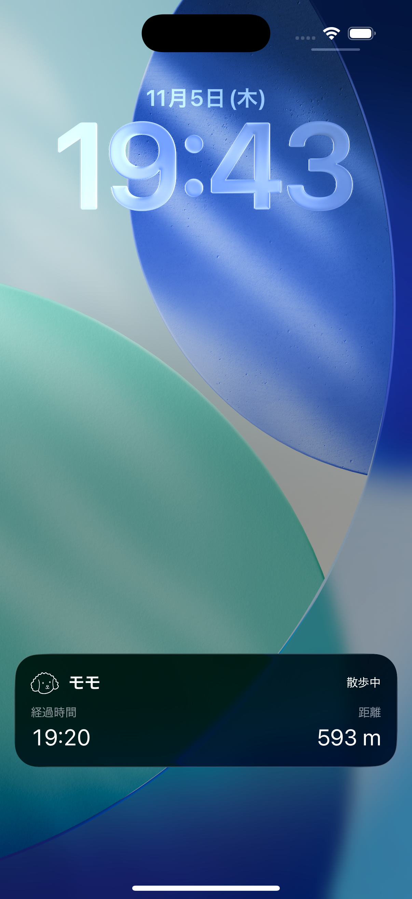
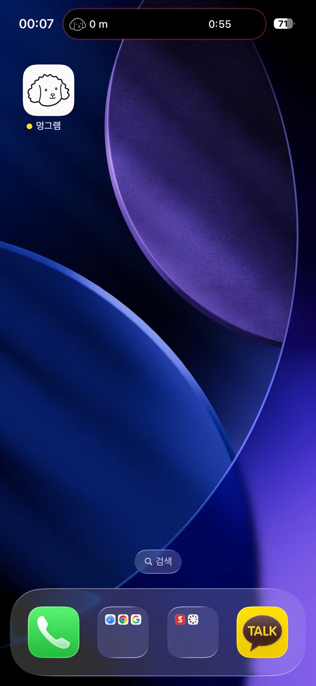
日々の散歩距離と写真をカレンダーに。予防接種やトリミングなどの予定も、一緒に確認できるようにしました。
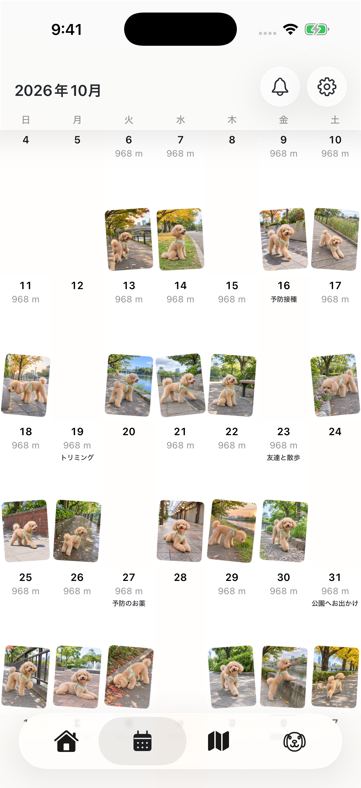
内部テスト・参加者2名
内部テストの参加者2名に共通した問題から、使い慣れた操作と画面構造のずれを見直しました。
自分の編集場所が見つからず、犬のプロフィールを変更してしまう。

「プロフィール＝自分」という慣れた認識と、犬中心の構造がぶつかる。

自分のプロフィールを、犬のプロフィールと並ぶ階層へ。
実装済み：保護者の名前・写真編集／改善予定：プロフィールへの導線
散歩中に写真は撮れても、撮った写真を確認する入口が見つからない。
「撮る→確認する」が一続きの行動なのに、画面上では分断されている。
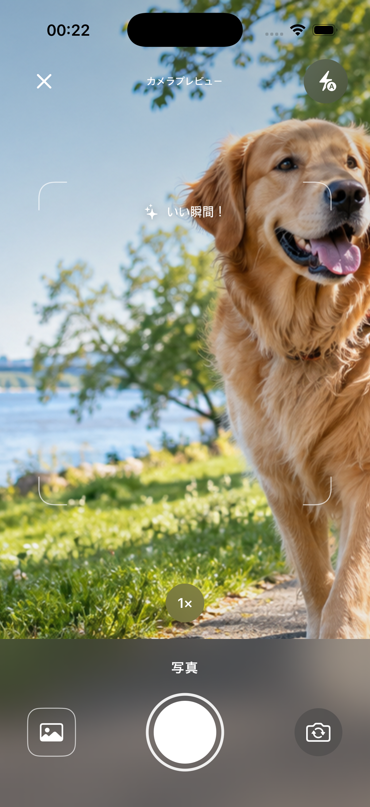
散歩中の画面にアルバムを表示し、撮影した写真へすぐ戻れるように。
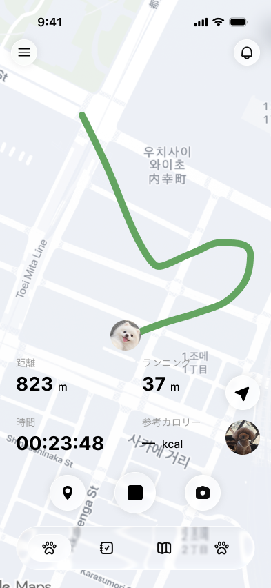
実装済み：カメラ内で直近の写真を確認／改善予定：散歩中のアルバム導線
必要な計測と収集への同意を確認・補完し、指標を分析して改善する計画です。
初回の有効な散歩を完了した人 ÷ 登録者
低い場合：離脱箇所を確かめ、開始・終了の流れを改善
初回完了散歩の開始時刻 − 登録時刻
時間がかかる場合：開始ボタンと初回の案内を見直す
GA4は参考情報です。sign_upは未送信、walk_startは収集中。walk_finishはサーバー保存完了で、有効な散歩の判定ではありません。
接続成功件数 ÷ 招待の試行件数
family_inviteoutcome=success・コード発行guardian_requestoutcome=success・参加申請family_join_completed仮のイベント名・接続完了低い場合：招待の案内と接続手順を見直す
散歩完了 → 家族が通知を受信 → 記録を閲覧
walk_finishサーバー保存完了screen_viewscreen_name=walk_detail通知受信と記録閲覧の関連付け：計測を設計予定離脱が多い場合：通知の配信・文面・記録への直接導線を確認
family_joinは未送信です。接続完了・通知受信・記録閲覧を関連付ける計測を追加予定です。
通知を受信した家族のうち、アプリを開いた割合
family_push_open仮のイベント名・通知タップ通知受信→家族のアプリ起動：計測を設計予定低い場合：通知の内容・送信タイミングを比較
ホーム訪問のうち、キャラクターに触れた割合
screen_viewscreen_name=homehome_dog_tap仮のイベント名・ホームのキャラクター操作タッチが少ない場合：反応・操作の案内を比較
対話UIの変更前後を同じ基準で比較
screen_viewscreen_name=homeuser_engagement収集中・参考イベントホーム滞在時間の専用計測を設計予定タッチと滞在の変化を合わせて、会話内容・見せ方を調整
提案イベントは未実装です。user_engagementだけでホーム滞在時間を確定せず、時間の変化だけで効果を断定しません。